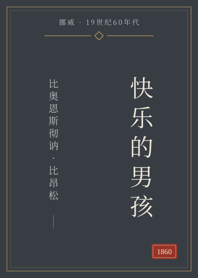
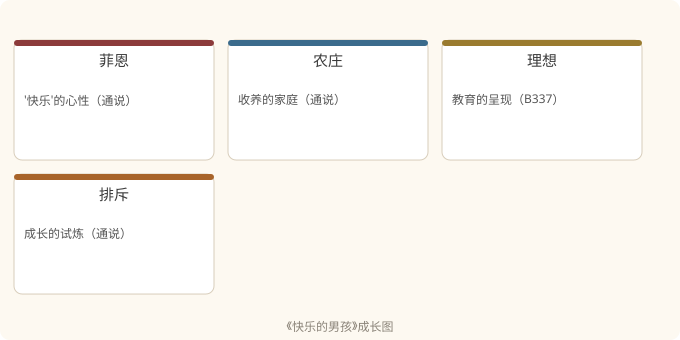

快乐的男孩
一、基本信息
| 作者 | 比奥恩斯彻讷·比昂松 |
|---|---|
| 成书/出版 | 1860年（Britannica B337：En glad gut (1860)——中译名待核） Bjornstjerne Bjornson — Encyclopaedia Britannica（百科全书） |
| 国别/地区 | 挪威 |
| 时代 | 近代 · 19世纪60年代 |
| 体裁 | 中篇小说 |
| 语言 | 挪威语 |

《快乐的男孩》成长图（主题·结构图）
二、创作背景
Britannica（B337）：En glad gut (1860)——农庄故事序列（与 Synnøve Solbakken 并列）。
Britannica（B337）：'sought to stimulate national pride...and to present ideals'。
题材（通说待核）：农家男孩的成长故事——'快乐的'心性。
三、内容脉络
（通说待核——B337未载剧情）菲恩（Finn说）：孤儿被收养后的成长。
（通说待核）'快乐'心性与家庭的和解。
四、主要人物表
| 人物 | 身份 | 说明 |
|---|---|---|
| 菲恩 | 孤儿 | （通说待核，B337未载） |
五、主题与艺术特点
- 农庄故事的教育理想（B337：peasant tales）。
- 民族自豪的呈现（B337）。
- 成长与接纳（通说待核）。
六、影响与评论
- Britannica：'peasant tales'序列（B337）。
Bjornstjerne Bjornson — Encyclopaedia Britannica（百科全书） - Britannica：1903诺奖（B337 交叉）。
Bjornstjerne Bjornson — Encyclopaedia Britannica（百科全书）
七、阅读建议
难点
- 挪威乡土社会。
- '农庄故事'类型。
- 《快乐的男孩》中译名（《快活的男孩》两说——通说待核）。
- 挪威文原版（公有领域）。
比昂松农庄故事之二；与《辛诺夫·索巴肯》对读。
八、待核实
- 菲恩人名核对（通说）。
- 1860年发表（《比昂格·比尔森的故事》说）待核。
- 中译名两说待核。